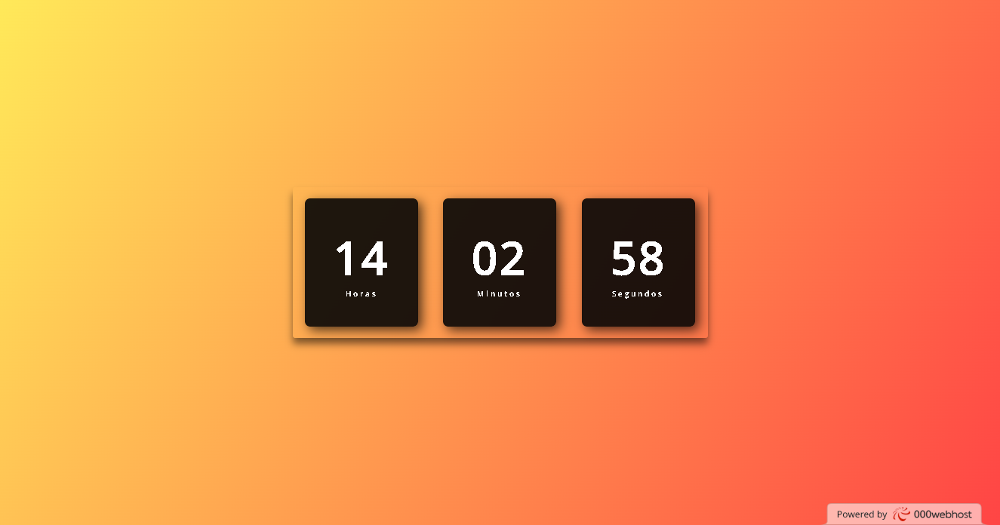

Projetos
TodoList site github
Nesse projeto, desenvolvi um TodoList usando principalmente JavaScript puro, além também de usar algumas ferramentas de HTML e CSS. O projeto conta com funcionalidades de adição, edição e remoção de tarefas, além de uma interface agradável de usar.
SnakeGame site github
Esse projeto foi desenvolvido através da tag canvas do HTML para tornar o jogo agradável ao usuário. O jogo em si foi desenvolvido em JavaScript e traz o clássico jogo da cobrinha, com todas as suas características, incluindo um contator de pontos e muito mais.

Gerador de senhas site github
Um projeto desenvolvido usando HTML, CSS e JavaScript para criar um simples sistema de geração aleatória de senhas, onde é possível copiar a senha gerada com apenas um clique.
Relogio digital site github
Esse projeto é um sistema simples, trabalhando o básico do HTML, algumas estilizações com CSS e captando o horário do sistema do usuário através do JavaScript.
